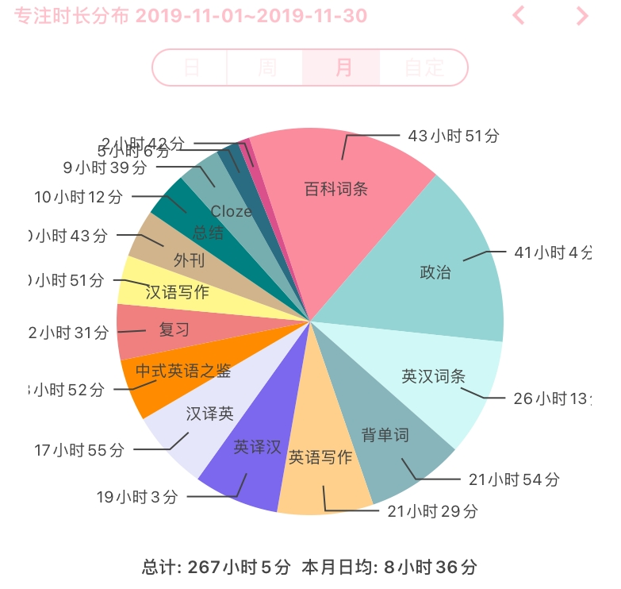
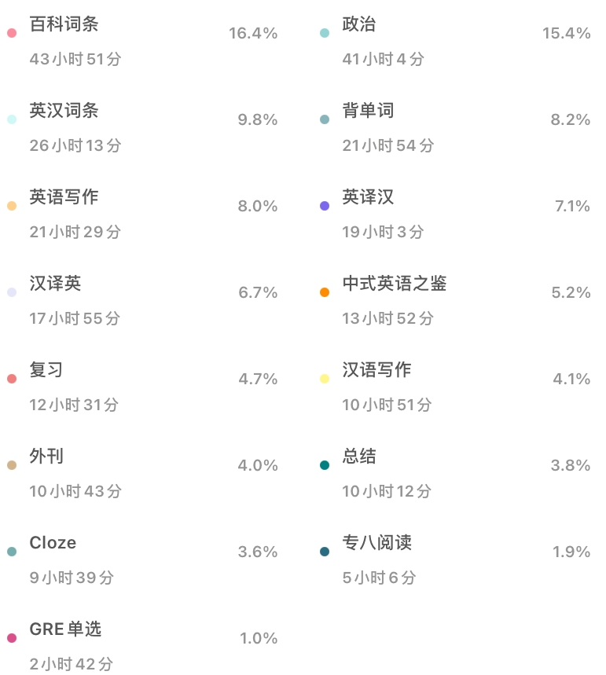
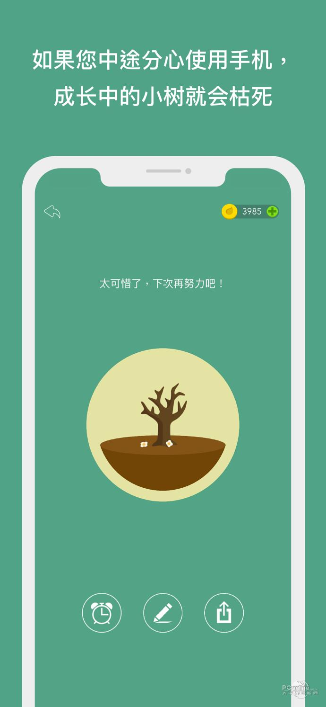
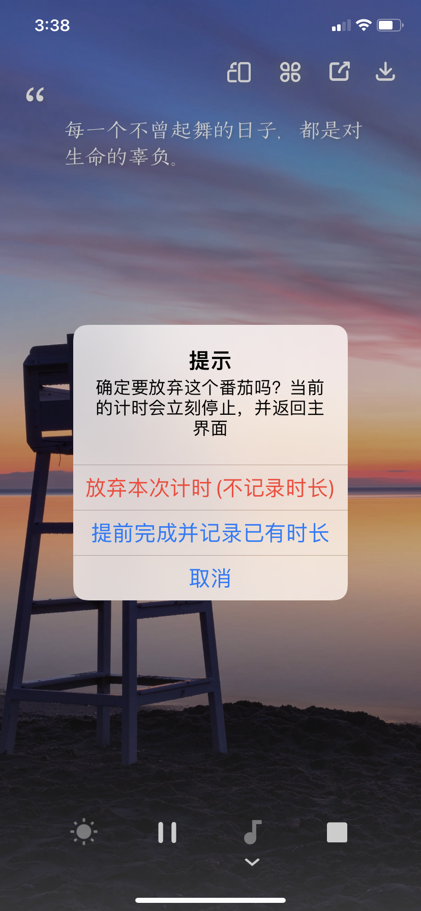

个人体验
通过回顾番茄ToDo的时间统计，了解当天的任务完成情况，可以总结自己的最佳工作学习时间段、哪些任务需要更小划分，以及番茄最常被中断的原因。


在考研期间，番茄统计每天专注八小时左右，相当于在这八个小时的时间里，我能够进行高效学习。有的同学有可能发现其他同学能专注十几个小时，但是不要误认为自己的专注时间比别人少就是一件坏事，要根据自身的实际情况而定，不要给自己增添心理负担。


在使用过程中，还发现了番茄ToDo还需要改进的地方，比如说在Forest里，一件任务被迫中断之后会造成森林里出现一棵枯树，给用户警醒的作用，不能随便放弃专注任务，有的用户会因此选择继续坚持专注；而番茄ToDo里，放弃专注之后用户没有什么损失，因此没有起到让用户坚持专注的效果，需要加以改进。